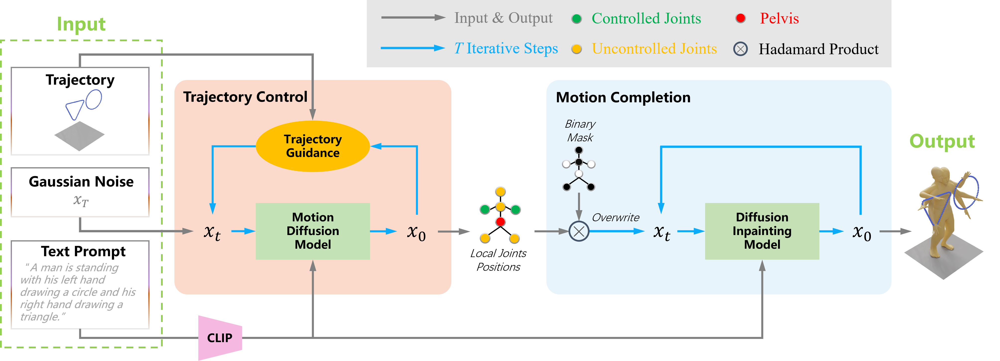

Trajectory-controlled human motion generation aims to synthesize realistic human motions conditioned on both textual descriptions and spatial trajectories. However, existing methods suffer from two critical limitations: first, the conflict between text and trajectory conditions disrupts the denoising process, resulting in compromised motion quality or inaccurate trajectory following; second, the use of redundant motion representations introduces inconsistencies between motion components, leading to instability during trajectory control.
To address these challenges, we propose CMC, a decoupled framework that effectively coordinates text and trajectory conditions through a divide-and-conquer strategy. CMC follows a divide-and-conquer paradigm, comprising two cascaded stages: Trajectory Control and Motion Completion. In the first stage, a diffusion model generates a simplified representation of the controlled joints under trajectory guidance, based on the given trajectories, ensuring accurate and stable trajectory following. In the second stage, a text-conditioned diffusion inpainting model generates full-body motions using the simplified representation from the first stage as partial observations. To mitigate overfitting caused by limited inpainting training data, we further introduce the Selective Inpainting Mechanism (SIM), which alternates between text-to-motion generation and motion inpainting tasks during training.
Experiments on HumanML3D and KIT datasets demonstrate that CMC achieves state-of-the-art performance in control accuracy and motion quality, demonstrating its effectiveness in coordinating multimodal conditions and representations.

Overview of CMC framework. It consists of two stages: Trajectory Control and Motion Completion . In the \textit{Trajectory Control} stage, we utilize textual descriptions and spatial trajectories of the controlled joints to predict the trajectories of both the pelvis and the controlled joints within a simplified representation space. Subsequently, the \textit{Motion Completion} stage takes these trajectories as partial observations and completes the full-body motion using a diffusion inpainting model. Both stages use CLIP as the text encoder.